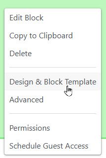
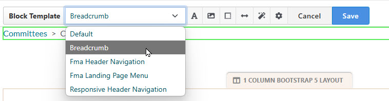
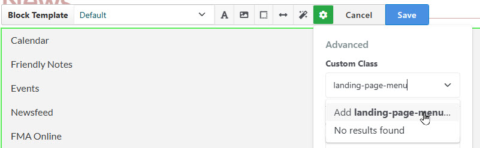

In Concrete CMS one may use the "Design & Block Template" menu to apply customizations of block behavior and appearance.
Important things you can do:
On our site we make extensive use of templates and CSS classes which are defined in our theme.
The "manual" styling items (#3 in the list) are occasionally useful for quick fixes, but use of
stylesheets is the preferred alternative since these styles can be applied across the site
and are subject to version control.
In edit mode, start by clicking the block and select "Design and Block Template"


The "Block Template" feature allows us to override default behavior of blocks. Templates may be provided by ConcreteCMS, third-party packages and our own code.
For a complete list of templates used in our website, see: "Where's the Code?"
When in the "Design and Block Template" dialog, you may add a custom class. Click the "cog" icon, and enter the class name under custom class. Remember to click "Add (class name)..." befor you click 'Save'

These custom classes are commonly used on our site: